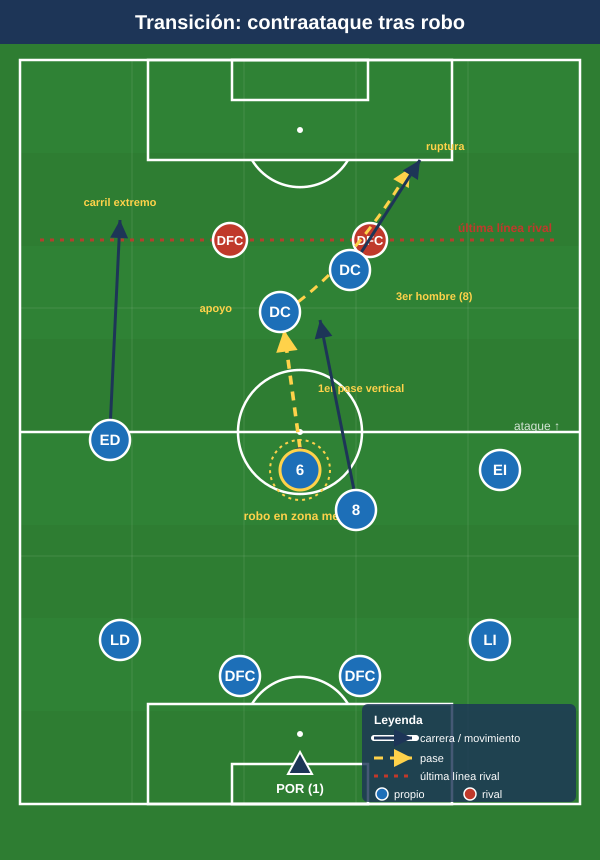
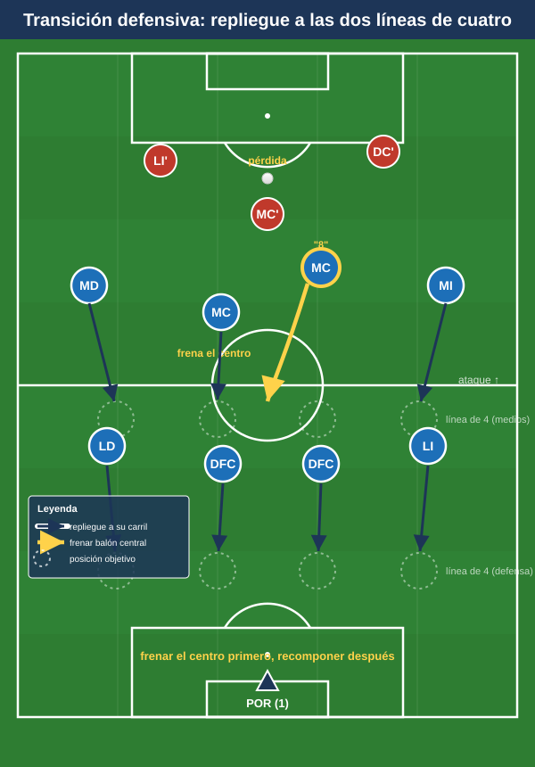

Módulo 04 — Transiciones y balón parado
Las transiciones son la gran virtud del 1-4-4-2. Este módulo cubre la transición defensa-ataque (contraataque), la transición ataque-defensa (pérdida) y una referencia breve de balón parado. Convención de posiciones en el README.
1. Transición defensa-ataque (contraataque) — el gran punto fuerte
El 1-4-4-2 es el sistema de referencia del contragolpe moderno (Atlético de Simeone; Leicester 2015-16 con Vardy-Mahrez-Kanté). Razones y mecanismos:
- Dos delanteros ya arriba como salida inmediata: al recuperar hay dos referencias de ataque sin subir hombres. Uno ofrece apoyo (pie, descarga) y el otro profundidad (carrera a la espalda) — la misma dualidad apoyo/ruptura del Módulo 03, ahora en velocidad.
- Extremos rápidos en transición: atacan los carriles exteriores corriendo al espacio; extremo + delantero al área es un patrón muy rentable.
- Pase de transición: primera opción = pase vertical y rápido al delantero (al espacio para el que rompe, al pie para el que apoya). Evitar el toque lateral lento que permite al rival reordenarse.
- Llegada de un MC (el "8") como tercer hombre del contraataque; el "6" y los centrales sostienen el equilibrio.
- Tipos: directo (3-4 pases, máxima velocidad al espacio) o indirecto/sostenido (asegurar y atacar con orden si no hay carril claro). Hace falta criterio para decidir cuándo lanzar y cuándo frenar.

2. Transición ataque-defensa (pérdida)
Dos modelos, viables y a menudo combinados:
- Repliegue organizado (modelo Simeone/Atlético): tras la pérdida, prioridad a recomponer el bloque medio-bajo en 4-4-2 rápido y compacto, frenar el balón y obligar al rival a atacar un muro de dos líneas de cuatro. Es el modelo más natural del sistema por la facilidad para formar las dos líneas.
- Contrapresión ("3-5 segundos"): presión inmediata en el lugar de la pérdida con el más cercano + apoyos, buscando recuperar arriba antes de que el rival progrese. Funciona si la estructura ofensiva estaba compacta; el riesgo es el espacio a la espalda de los pivotes si se rompe la presión. (Misma regla descrita en el Módulo 02 §3.3.)
- Riesgo estructural a vigilar: las pérdidas en construcción dejan a los dos centrales en inferioridad; de ahí la importancia del resto defensivo (un MC + centrales por detrás del balón) durante el ataque. La zona crítica al defender en transición es el espacio entre líneas y los medios espacios.

Decisión "contrapresiono o replego": colectiva y referida al primer defensor (el que ha perdido el balón). Si la estructura estaba compacta y hay apoyos cerca, contrapresión; si el equipo estaba estirado o el rival ya progresa, repliegue.
3. Balón parado (referencia breve)
3.1 A favor — córners
- Aprovechar la masa de rematadores: dos delanteros + central(es) ofensivos dan 4-5 cabezas. Combinar marcaje al hombre y bloqueos (cortinas para liberar al mejor rematador).
- Zonas: rematadores al primer palo (prolongación), zona central (remate), segundo palo (rechace); un hombre a la frontal para el rechace y el equilibrio. Dejar 1-2 arriba (uno de los puntas) para el contragolpe.
3.2 A favor — faltas y saques
- Falta lateral: tratarla como un centro (mismas zonas de remate del Módulo 03 §3.4).
- Falta directa frontal: especialista al disparo; rematadores atacando el rechace y vigilando la barrera.
- Saque de banda en campo rival: recurso de finalización (lanzador largo al área) o para combinar y mantener.
3.3 En contra (defensa de estrategia)
- El 1-4-4-2 suele defender córners con mixto (zona + hombre): zona en primer palo y trayectoria del balón, marcaje individual a los rematadores peligrosos.
- Dejar un delantero arriba condiciona al rival a dejar un defensor atrás, restándole rematadores y dando salida de contragolpe.
Ideas clave
- La transición ofensiva es vertical y rápida a los dos delanteros (uno apoya, otro rompe) + extremos al espacio; el "8" llega de tercero.
- En la transición defensiva, elegir entre contrapresión de 3-5 s o repliegue compacto en 4-4-2, siempre con criterio colectivo.
- El resto defensivo durante el ataque (un MC + centrales) es lo que hace seguras las dos transiciones.
- En balón parado a favor, se explota la masa de rematadores con bloqueos; en contra, mixto y un punta arriba para equilibrio.
Errores comunes
- Tocar en lateral lento tras recuperar, dando tiempo al rival a reordenarse.
- Atacar sin resto defensivo: subir demasiados hombres y quedar expuesto a la contra rival.
- Perseguir por fuera en el repliegue en vez de ocupar primero el eje para frenar el balón central.
- Contrapresionar desordenado desde una estructura estirada, regalando la espalda de los pivotes.
- En ABP, no dejar a nadie arriba (se pierde el equilibrio y la salida de contragolpe).